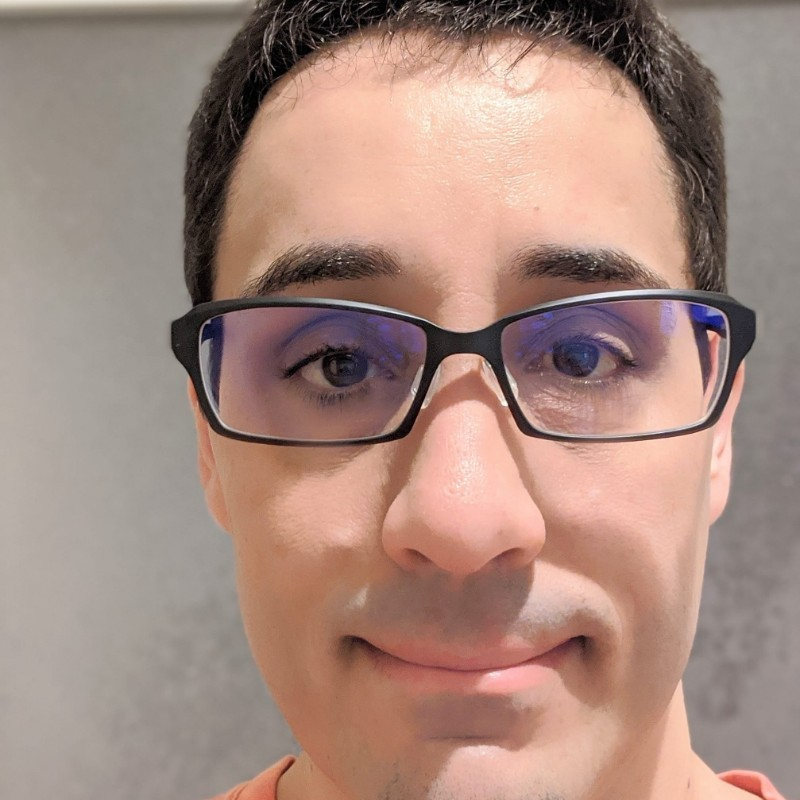

Grégory Brossard

Summary
Dedicated French Teacher with passion for promoting cultural literacy. Expert in French grammar. Offering 10 years of experience in teaching French for students ages 16 to 80.
Education
- Master of Arts: International Trade - INALCO, France
- Bachelor of Arts: International Trade - INALCO, France
- Bachelor of Arts: Japanese Studies - INALCO, France
Work experience
- French Instructor - Roland Corporation K.K, Tokyo
2013-04 - Current
- Facilitating learning of French language using variety of resources and technological tools.
- Helping students develop important learning skills and good study habits.
- Building cultural literacy by organizing lesson plans focused on French-speaking countries.
- Facilitating positive learning environment by using enthusiastic and energetic instructional strategies and consistent classroom management.
- Assistant Manager - Booklive Co., Ltd (Toppan Printing Co., Ltd), Tokyo
2010-01 - 2011-03
- Gathered qualitative and quantitative data, synthesized them and wrote study notes about French digital publishing and IT industries regarding local competition, distribution channels, recent legal trends, possible development areas etc.
- Translated and proofread e-manga, marketing presentations, Software UI (display), requests for proposal and legal contracts. Liaised with other translators on translation issues.
- Created mobile content advertisement pages of several e-books available for sale for French mobile phone users.
- Account Executive - TransPerfect Translations Japan , Tokyo
2009-02 - 2009-05
- Built and strengthened relationships with new and existing accounts to drive revenue growth.
- Cold called, canvassed and obtained referrals to develop sales pipeline.
- Recruitment Consultant - East West Consulting K.K, Tokyo
2007-07 - 2009-01
- Developed thorough understanding of client companies, their industry, what they do and their work culture and environment (automotive makers and parts suppliers).
- Identified and directly approached suitable candidates, advertised vacancies by placing adverts in Japanese recruiting sites, received and reviewed applications, managed interviews and short-listed candidates.
- Organized interviews for candidate as requested by client, informed candidates about results of their interviews, provided post-recruitment support.
Skills
- Microsoft Office Suite:★★★
- Organizational skills:★★★★
Languages
- French language:★★★★★
- Japanese language:★★★★
- English language:★★★★
Other